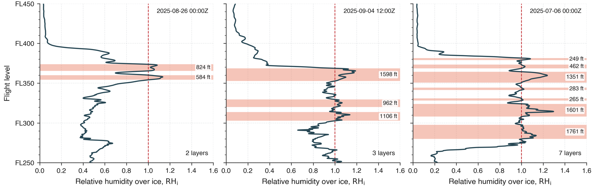
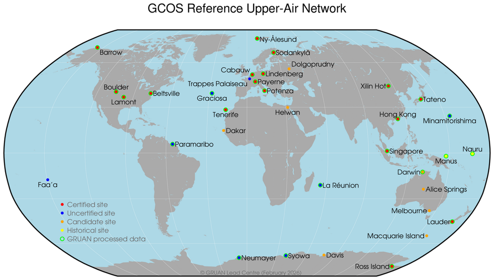
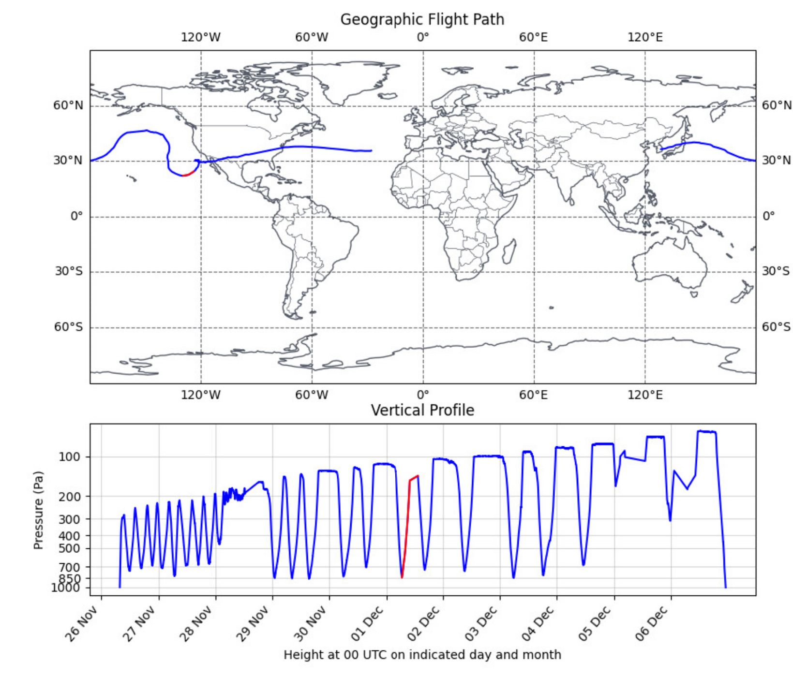
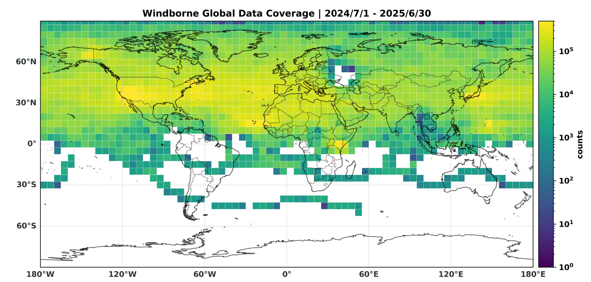
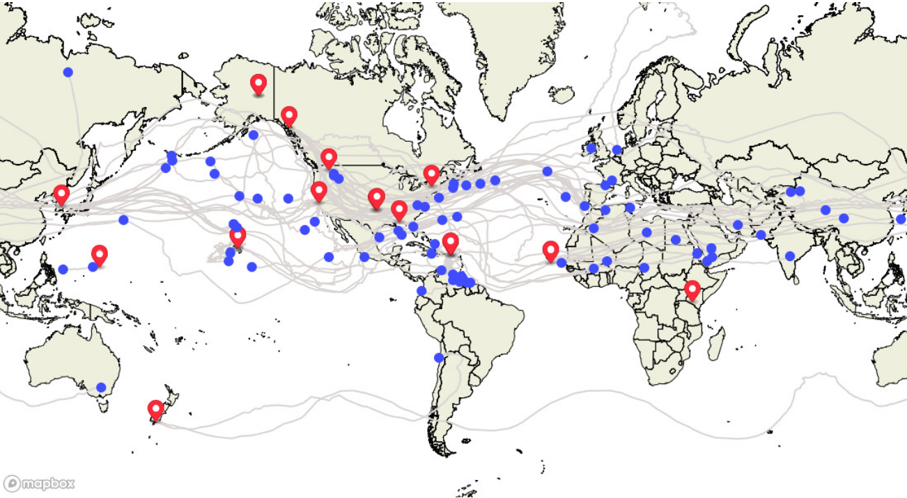

Investigating the WindBorne API data products and the potential of using balloon radiosonde measurements for contrail-relevant atmospheric profiling over CONUS.
Radiosonde measurements allow us to resolve the vertical structure of the atmosphere — its moisture and temperature profiles — to determine ice-supersaturated layers (ISSRs), layers where relative humidity over ice exceeds 100%, whenever soundings are available. These are the layers in which contrails can persist.
The key output of radiosonde profiles for contrail research is the identification of ice-supersaturated regions (ISSRs) based on temperature and humidity. The profiles below show examples of ISSRs detected by GRUAN radiosondes at different times representing different cases of vertical stratification, with the light red bands marking layers of supersaturation and their vertical extent in flight levels.

GCOS Reference Upper-Air Network (GRUAN) sondes provide a high level of accuracy for humidity measurements, making them well-suited as a reference for contrail-relevant atmospheric profiling. However, their coverage is sparse: only three GRUAN sites exist over CONUS, and the closest one to MIT — Beltsville, MD — has fewer than ten launches per month. This limits how often and where we can obtain reliable vertical profiles.

WindBorne sondes can complement GRUAN measurements by flying for weeks or even months. Instead of a single ascent, they make repeated vertical passes through the atmosphere by applying negative lift whenever the sonde reaches a certain altitude — like a yo-yo through the troposphere. Each launch therefore generates many more soundings and covers a much larger geographic area than a conventional radiosonde.


